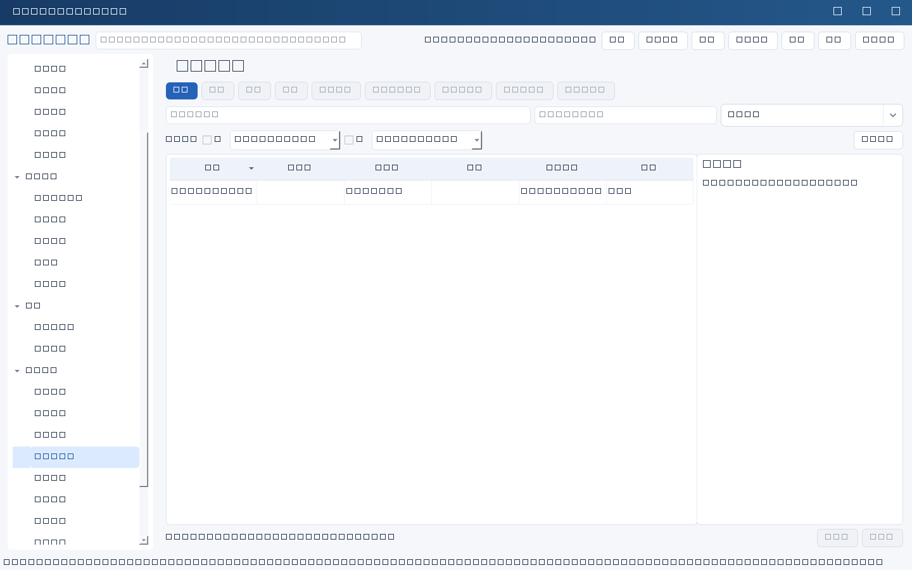
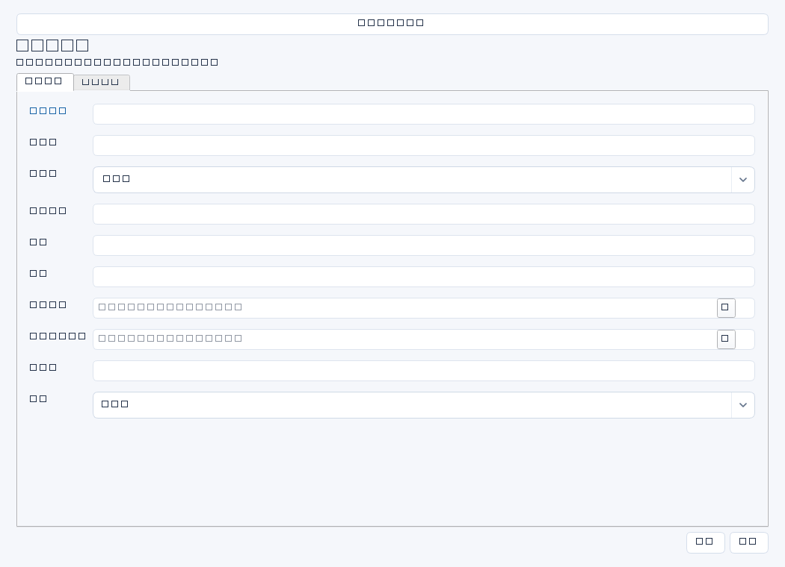

集中记录IT供应商合同的服务边界、金额、时限、SLA和退出安排，支持续约、绩效检查及供应商风险控制。依据应来自已签合同及补充协议。


操作步骤与资料获取
- 向采购、法务或合同负责人取得已签合同、附件、补充协议和验收付款约定，核对版本而非只看报价单。
- 新增合同，填写供应商、负责人、服务范围、金额和币种，明确含税及期限口径。
- 核对到期日期与提前解约/续约通知截止日期，记录SLA和退出安排，识别数据导出、交接和账号回收要求。
- 定期收集服务报告、故障响应与业务反馈，人工评估续约、整改或退出；需要行动时另建任务。
字段逐项说明
| 操作 / 字段 | 详细说明 |
|---|---|
| 名称 | 合同显示名称，强制非空；建议服务＋年度＋合同号。 |
| 供应商 | 签约主体的正式名称，必要时注明实际服务方；自由文本，不是供应商主数据ID。 |
| 负责人 | 内部管理合同交付和续约的人名，避免只留外部销售联系人。 |
| 服务范围 | 列系统、设备、地点、数量、服务时段和排除项，并注明合同附件依据。 |
| 金额 | 合同金额；非空时强制非负十进制纯数字，不含货币符号；建议证据中说明总额/年度额及含税口径。 |
| 币种 | 如CNY、USD；自由文本，不强制标准代码，不自动换汇，建议统一使用ISO币种代码。 |
| 到期日期 | 服务或合同结束日，建议明确采用哪种口径；非空时强制YYYY-MM-DD。 |
| 通知截止日期 | 按合同约定最迟提出续约/终止通知的日期；非空时强制YYYY-MM-DD，系统不自动从到期日期倒推。 |
| SLA | 写响应、恢复、可用性、服务时间、排除项和违约处理条款索引；不要只写“7×24”。 |
| 退出安排 | 写数据导出格式、迁移配合、文档交接、账号撤销和数据删除确认要求。 |
| 状态 | 用通用状态记录合同管理进展；不等同法务签署状态，必要时在证据注明已签或待签事实。 |
| 证据 | 已签合同、附件、补充协议、服务报告和通知回执的编号、版本与受控位置。 |


示例（仅演示）
| 操作 / 字段 | 详细说明 |
|---|---|
| 名称 | ERP年度运维服务—HT-2026-018 |
| 供应商 | 示例软件服务有限公司 |
| 负责人 | 李明 |
| 服务范围 | ERP生产应用支持及每月巡检，不含数据库许可费用 |
| 金额 | 96000 |
| 币种 | CNY |
| 到期日期 | 2027-03-31 |
| 通知截止日期 | 2027-01-31 |
| SLA | 严重故障30分钟响应，4小时提供恢复方案；以合同附件二为准 |
| 退出安排 | 到期前交付配置及接口文档，协助数据导出，交接后撤销远程账号 |
| 状态 | 进行中 |
| 证据 | 已签合同HT-2026-018及附件二；金额为年度含税总额；受控资料库/合同/018 |
形成闭环
- 在通知截止前完成服务评价和续约/退出决定，保留通知送达回执。
- 合同结束时核对交付、费用、数据、账号及运维交接，再人工记录结束状态。
- 服务质量问题转风险或整改任务跟踪，合同本身不会自动催办供应商。
常见误区与边界
- 只盯到期日，遗漏提前通知条款导致被动续约。
- 把“4小时提供方案”写成“4小时恢复”，误读SLA。
- 误认为记录金额会自动生成应付账款、付款申请或预算占用。